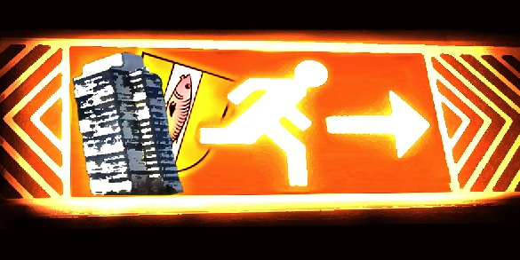

Aus, aus, aus – ich bin Raus!

Hey liebe Leutz!
Ich hoffe ihr habt Weihnachten gut hinter euch gebracht und eine schöne Zeit erlebt. Ich habe die Tage besonderst genossen um mich von dem ganzen Umzugedöhns zu erholen. Umzug? Jepp, Richtig! Seit letzter Woche bin ich Raus-Aus-Kaiserlautern!!! Hab mein Studium fertig und werde ab 1.Januar bei Qype.com in Hamburg anfangen.
Ja, ich habs somit geschafft und schliesse hiermit mein Projekt Raus-Aus-KL ab. Trotz der so manchen kleinen Stadtlästereien und Kritiken die man hört oder ich geäusssert haben sollte, will ich meine sechs Jahre in Kaiserslautern auf keinen Fall missen und schaue auch mit einem traurigen Auge zurück: es war eine sehr schöne Zeit! Ich habe in super WGs gewohnt, tolle Menschen getroffen, fätte Parties erlebt und verdammt viel Spaß gehabt (Ja, das geht auch in KL!!!). Gerade das letzte Jahr, speziell geprägt auch durch diesen Blog, war besonders spannend & erlebnisreich.
Raus-Aus-KL ist ursprüngich aus einer ‘Schnapsidee’ entstanden, vorallem weil ich das Bloggen ausprobieren wollte. Blogs in Tagebuchform gabs mir schon zuviele, also hab ich rumliegende Event Flyer und Plakate eingetipp und gepostet. Werbung für den Blog gabs kaum, bissl über Studivz, Freunde und Emailsignatur. Trotzdem kam die Aktion dann so gut an, dass ich es soweit es ging weitergeführt habe. Tja, und das Resultat nach über einem Jahr kennt ihr ja. In Zahlen gesprochen: ca. 440 postings, 220 Kommentare (+ über 2000 SPAM), seit Sommer über 100 Besucher täglich, insgesamt über 25.000.
Da ich aber nun endgültig raus bin, hab ich mich nach langem Hin-und-Her entschlossen den Blog zu schliessen. Alles bleibt zwar online, aber neue Postings gibt’s nicht mehr. Somit ist der Blog TOT. Doch die IDEE lebt weiter – nun liegt es an euch weiterzumachen. Als kleiner Anfang, hier mal meine Sourcen:
* Flyer & Plakate aus Benderhof, AStA, Uni, Stadt
* RHRK, UG, Contact usw. Newsletter
* http://www.Kammgarn.de (RSS Feed)
* http://www.Kultur-KL.de (RSS Feed)
* http://www.Juz-kl.de (RSS Feed)
* http://www.Indie-KL.de
* http://www.frohlocker.de
* AStA KL
* Beatclub-KL.de
* Lokalzeitung KL (RSS Feed)
* Studivz Gruppen, u.a: ‘Indie KL’, ‘Bringt Spaß nach KL’..
* Flashmob KL
* versch. MySpace Seiten
Also Leutz, haut rein! Ich wünsch euch weiterhin viel Spaß und macht das Beste draus! Freu mich Euch auf KL Parties irgendwann wieder zu sehen.
Let there be Rock!
Tschö, Euer Tobi!